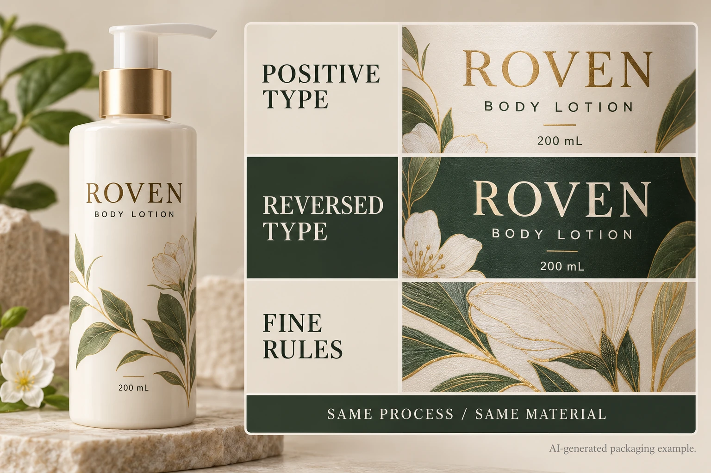

Describe the feature, not just the point size
A point-size label does not fully describe a printed letter. Two typefaces at the same nominal size can have different stroke widths, openings and proportions. Positive dark text on a light region also presents a different feature from a light letter formed by an opening in a dark printed panel.
Identify the actual word and its location. Include the font or outlined artwork reference, final placement size, foreground and background, and any white backing or finish involved. For a decorative rule, identify the thinnest intended stroke and whether the design uses a taper.
The designer can supply those observations. Procurement should not guess them from a website screenshot. A source file with live type, a rasterized text block and vector outlines can each require a different correction route.
The PDF font guide deals with carrying the intended characters into the exported document. The image-resolution guide deals with available raster detail. This article addresses whether the intended physical features are suitable for the agreed printing route.
Get limits from the receiving production team
Esko's flexo-prepress guide identifies reverse type and fine lines as process-sensitive details. Its discussion supports asking for production-specific preparation rather than assuming the artwork behaves identically across processes.
Request the current printer recommendation for each identified feature. Ask what conditions it covers and whether it describes an artwork input, a target output or an acceptance criterion. A number detached from those distinctions can become a requirement nobody actually agreed to meet.
If a supplier proposes an adjustment, have the designer review the resulting letters or illustration. Thickening a stroke can improve one feature while changing the brand artwork. Enlarging text can move the surrounding copy. Neither is automatically a harmless technical correction.
Keep the agreed construction identifiable. A sample printed on another stock with another finish is useful for orientation, but its relevance to the quoted job needs confirming.
Choose between preserving the detail and changing the design
Imagine a hypothetical serum label whose identity depends on a delicate line illustration. A representative physical sample may be worth the additional approval step because the feature is central to the design. The review should identify what detail must remain visible and which small differences are acceptable.
Now consider a secondary decorative line on a practical back label. Simplifying or removing it may free space and reduce uncertainty without harming product identification. Paying for more proof iterations to preserve an unimportant stroke may solve the wrong problem.
For small essential wording, the responsible brand reviewer must also settle applicable information requirements. This article does not prescribe legal type sizes or approve regulatory copy. Printability and the suitability of the wording are separate responsibilities that need to meet in the same final layout.
Build a feature sheet for the actual design
Use one row per meaningful feature rather than listing every letter on the label.
| Feature | Inputs for review | Evidence and action |
|---|---|---|
| Positive type | Exact text, font/artwork, final size and ink intent | Printer recommendation and representative result |
| Reversed type | Exact opening, surrounding ink and backing | Check that useful letter spaces remain recognizable |
| Fine rule or illustration | Thinnest stroke and important intersections | Confirm what is preserved, simplified or changed |
| Multi-layer detail | Relevant white, color and finishing relationships | Identify which production stages affect the feature |
| Acceptance record | Approved reference, reviewer and unresolved point | Link the decision to the supplied export |
First mark the few features that could block acceptance. Send the final-size artwork with those locations to prepress. Obtain the supplier's recommendation and decide which features need a changed design or relevant physical evidence. Review the resulting export and sample together; record the exact reference accepted.
Stop the affected release when essential text cannot be evaluated, the supplier has not identified the relevant process, or the evidence belongs to a different construction whose relevance is unknown. Passing a visual screen check is not a reason to close those gaps.

Avoid an expensive blanket correction
Do not enlarge every text block merely because one reversed word needs attention. That can force a complete redesign and create new conflicts with the cut boundary. Equally, do not leave every feature untouched because another label with a different design printed successfully.
Record local changes and recheck the affected relationships. If a revised illustration changes the clear area or the white layer, bring that difference back into the relevant prepress review. A feature sheet helps keep a small correction small without losing track of its consequences.
For a cosmetic label inquiry, provide the actual-size export, marked critical features, container, construction preference and quantity per artwork. Ask which process-specific sample or correction is needed before release. The contact form prepares a message; artwork and references travel separately by email or WhatsApp. Give the printer a feature to evaluate, rather than a request to make all small print better.